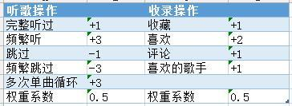
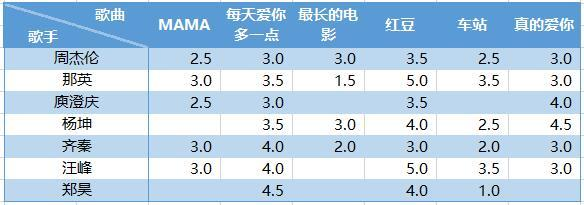
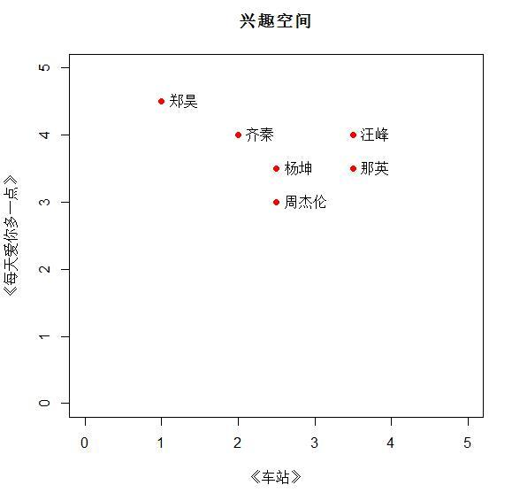
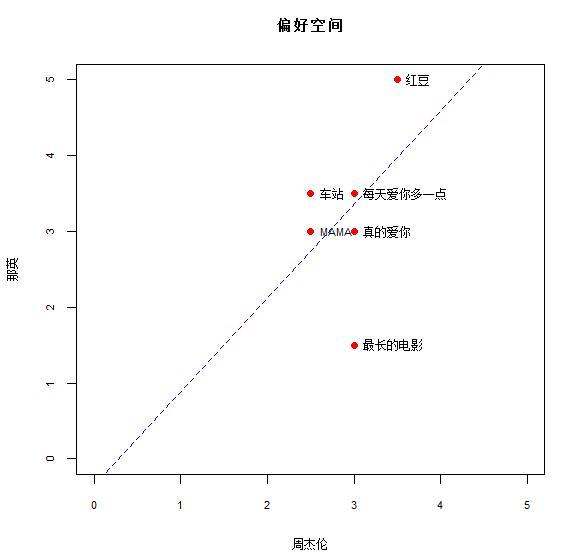
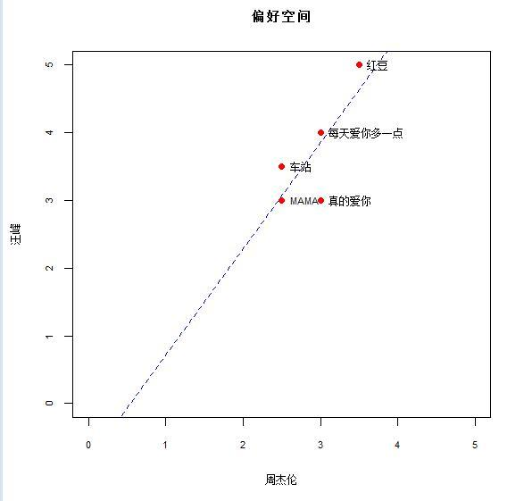
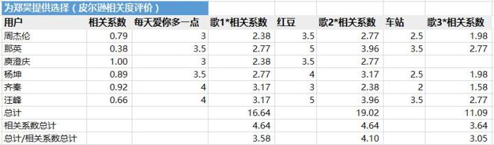

|
|
☰ 目录
20180828协同过滤的一个例子来自「集体智慧编程」。 基于用户的协作型过滤和基于物品的协作型过滤。 基于用户的协同过滤1- 根据用户行为建立评价规则, 不能随意变更。  2- 得到用户对每首歌的评分, 左侧不是歌手，应该是用户A、B、C。。。  3- 寻找相近的用户，计算相似度有两种方法：
以歌曲为坐标轴，寻找相近的用户：  欧几里得距离是直接看距离，很直观 。 4- 皮尔逊相关度评价是相对复杂的， 计算两组数据与某一直线拟合度的相关系数，来判断两个对象的兴趣相似度。 计算更复杂， 但能解决数据不太规范的情形。（例如， 甲的用户偏好评分普遍高， 而乙则相反， 用欧几里地距离通常南辕北辙）， 但皮尔逊能给出更好的结果。 比较两个用户对共同音乐的评分情况：  《真的爱你》 两个用户分别评分为3， 3， 所以在(3,3) 位置处。 虚线是最佳拟合线（采用OLS模型， 让线尽可能靠近所有数据点）。 如果两位用户对所有歌曲的偏好相同， 那么这条直线将会穿过所有点，并且是对角线。 5- 下面来一个相关系数较高的例子：  皮尔逊的最大好处，就是修正了“夸大分值”（grade inflation），虽然汪峰总是倾向于比周杰伦打更高的分，但最终的虚线几乎是拟合的，表示他们有相对近似的偏好。 推荐歌曲1- 如果要给A推荐歌曲，可以找一个与A相近的人推荐。但太随意。 可通过一个加权的平均值为歌曲打分， 评分结果即排名结果。 但我们需要取得所有其他用户的相关分数， 借此得到相关系数，再乘以它们与相关歌曲的分数，得到所需要的评价值。  相关系数： 来自皮尔逊相关度评价； 将总计除以相关系数的之和（避免总分一直增大），可以得到歌曲排名。 最后一行即使推荐的结果。 2- 总结： 用户甲 —》 偏好相近的用户 —》 他们对相关歌曲的评分 —》 推荐列表 基于物品的协同过滤1- 歌曲A —》 相关用户 —》 相关歌曲—》推荐列表；（听了这首歌的人还听了。。。）可以看成是找类似的歌； 2- 用户甲—》 偏好歌曲 —》 推荐列表； 另外一个例子是： https://www.cnblogs.com/exlsunshine/p/4214357.html |